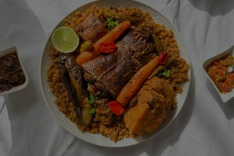
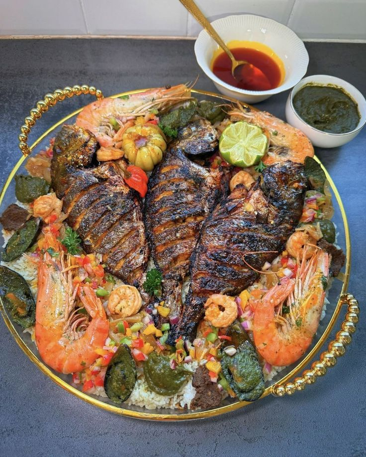
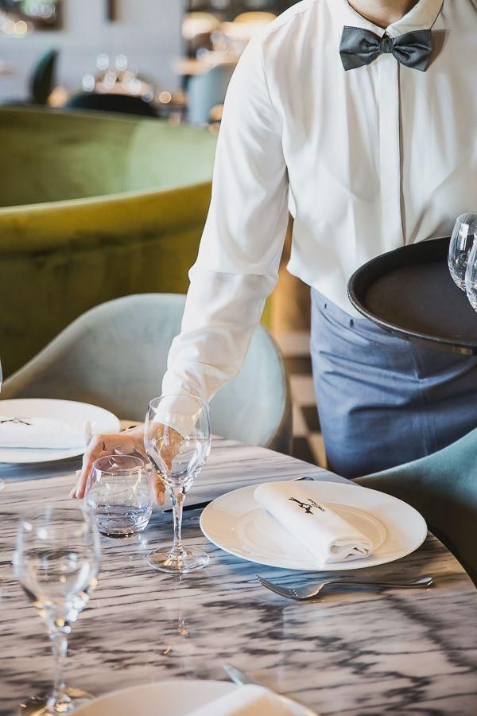

L’âme du Sénégal dans chaque assiette, recettes traditionnelles, produits locaux et
hospitalité authentique.
Teranga Food est un restaurant sénégalais fondé à Dakar en 2020, spécialisé dans la cuisine
traditionnelle et moderne du Sénégal.
Notre mission : offrir à chaque client une expérience
culinaire
authentique, fondée sur la qualité des produits locaux et les valeurs
d’hospitalité propres à la
culture
sénégalaise.
Bienvenue à notre table. 🍲

Nous vous proposons une cuisine 100% sénégalaise, préparée avec des épices authentiques et des recettes transmises de génération en génération. Thiéboudienne, yassa poulet, mafé… chaque plat raconte une histoire.

Entrez dans un espace chaleureux et convivial. Notre salle vous accueille dans une ambiance authentique calme, musique douce et parfums de cuisine se mêlent.

Chez Teranga Food, nos serveurs sont bien plus que du personnel , ils sont les ambassadeurs de l’hospitalité sénégalaise. Souriants, attentionnés et toujours disponibles, ils veillent à ce que chaque moment passé chez nous soit inoubliable.


Ces plats ne sont qu’un avant-goût de ce que Teranga Food vous réserve.
Notre menu regorge de saveurs authentiques, de recettes généreuses et de découvertes
culinaires qui raviront vos papilles.
Ne laissez pas passer l’occasion de vivre une expérience
unique.
Envie d’en découvrir plus ? Consultez notre menu complet , une expérience savoureuse vous attend ! 🍲